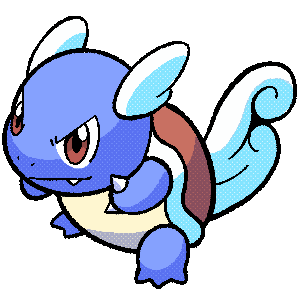
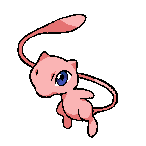

-
Bulbasaur #001
- Grama
- Veneno
Há uma semente de planta em suas costas desde o dia que este Pókemon nasce. A semente cresce lentamente.
-
Ivysaur #002
- Grama
- Veneno
Quando o bulbo em suas costas cresce, parece perder a capacidade de ficar em pé em suas patas traseiras.
-
Venusaur #003
- Grama
- Veneno
Sua planta floresce quando está absorvendo energia solar. Ele permanece em movimento para buscar energia solar.
-
Charmander #004
- Fogo
Tem preferência por coisas quentes. Quando chove, diz-se que o vapor jorra da ponta da sua cauda.
-
Charmeleon #005
- Fogo
Tem uma natureza bárbara. Na batalha, ele gira sua cauda de fogo e corta com garras afiadas.
-
Charizard #006

- Fogo
Diz-se que o fogo de Charizard queima mais se ele tiver passado por duras batalhas.
-
Squirtle #007
- Água
Quando retrai o longo pescoço para dentro da concha, ele esguicha água com força vigorosa.
-
Wartortle #008
- Água
É reconhecido como um símbolo de longevidade. Se sua concha contiver algas, esse Wartortle é muito antigo.
-
Blastoise #009
- Água
Ele esmaga seu inimigo sob seu corpo pesado para causar desmaios. Em caso de emergência, ele se retirará para dentro de sua concha.
-
Mew #0151
- Pisíquico
Quando visto através de um microscópio, o cabelo curto, fino e delicado deste Pokémon pode ser visto.
-
Chikorita #0152
- Grama
Na batalha, Chikorita agita sua folha para manter o inimigo afastado. No entanto, uma fragrância doce também exala da folha, acalmando os Pokémon em batalha e criando uma atmosfera acolhedora e amigável ao redor.
-
Bayleef #0153

- Grama
O pescoço de Bayleef é rodeado por folhas enroladas. Dentro de cada folha tubular há um pequeno broto de árvore. A fragrância deste ensaio deixa as pessoas animadas.
-
Meganium #0154
- Grama
A fragrância da flor de Meganium acalma e acalma as emoções. Em batalha, este Pokémon exala mais do seu cheiro calmante para enfraquecer o espírito de luta do inimigo.
-
Cyndaquil #0155
- Fogo
Cyndaquil se protege acendendo as chamas em suas costas. As chamas são vigorosas se o Pokémon estiver com raiva. No entanto, se estiver cansado, as chamas crepitam intermitentemente com combustão incompleta.
-
Quilava #0156

- Fogo
Quilava mantém seus inimigos afastados com a intensidade de suas chamas e rajadas de ar superaquecido. Este Pokémon aplica sua incrível agilidade para desviar de ataques mesmo enquanto queima o inimigo com chamas.
-
Typhlosion #0157
- Fogo
Ele ataca usando rajadas de fogo, cria brilhos de calor com fogo intenso para se esconder.
-
Totodile #0158
- Água
Apesar da pequenez do seu corpo, as mandíbulas do Totodile são muito poderosas. Embora o Pokémon possa pensar que está apenas mordendo de brincadeira, sua mordida tem poder suficiente para causar ferimentos graves.
-
Croconaw #0159
- Água
Uma vez que Croconaw tenha fixado suas mandíbulas em seu inimigo, ele absolutamente não o soltará. Como as pontas de suas presas são bifurcadas como anzóis farpados, elas se tornam impossíveis de serem removidas depois de afundadas.
-
Feraligatr #0160
- Água
Feraligatr intimida seus inimigos abrindo sua boca enorme. Na batalha, ele chutará o chão com força com suas patas traseiras grossas e poderosas para atacar o inimigo a uma velocidade incrível.
-
Celebi #0251
- Grama
- Psíquico
Este Pokémon veio do futuro atravessando o tempo. Pensa-se que enquanto Celebi aparecer, um futuro brilhante e brilhante nos aguarda.
-
Pikachu #0025
- Elétrico
Quando está irritado, descarrega imediatamente a energia armazenada nas bolsas em suas bochechas.
-
Jirachi #0385
- Psíquico
- Aço
Uma lenda afirma que Jirachi realizará qualquer desejo escrito em notas presas à sua cabeça quando acordar. Se este Pokémon sentir perigo, ele lutará sem acordar.
-
Togepi #0175
- Fada
A concha parece estar cheia de alegria. Diz-se que ele compartilhará boa sorte quando tratado com gentileza.
-
Ditto #0132
- Normal
Sua capacidade de transformação é perfeita. No entanto, se for feito rir, não consegue manter seu disfarce.
-
Magikarp #0129
- Água
Um Pokémon patético e pouco poderoso. Pode saltar alto em raras ocasiões, mas nunca mais de dois metros.